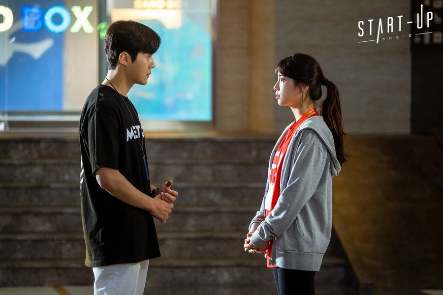
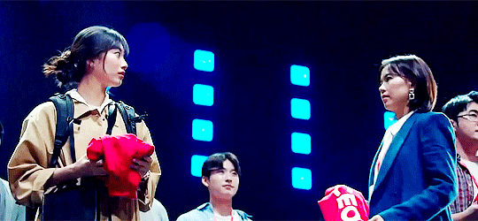

Confira o que se passou nesse dorama lindo
Nesse dorama você terá que se preparar para muitas risadas que doem a barriga, mas também deixe seu lenço do lado porque você com certeza irá precisar!
Apostando Alto, da Netflix e da tvN, é ambientado em um Vale do Silício fictício na Coreia do Sul. Ali, duas irmãs que se separaram na infância ao escolher pais diferentes no processo de divórcio acabam se enfrentando tentando provar quem é mais bem sucedida – a irmã que escolheu o pai rico ou a irmã que ficou com o pai pobre – e qual delas fez a escolha correta.
Enquanto enfrentava a separação, a protagonista, Seo Dalmi, teve uma ajudinha de um amigo secreto por correspondência. Sua identidade era a de Han Ji Pyeong, um garoto órfão que, devendo um favor para a mulher que cuidou dele como se fosse um filho, aceita escrever para ela usando o nome de um garoto no jornal como pseudônimo, Nam do San. Os dois perderam contato, mas Dalmi nunca esqueceu seu primeiro amor. Anos depois, Dalmi quer reencontrá-lo para ganhar forças para um embate com sua irmã. Tentando evitar que a neta fique decepcionada, sua avó aciona Han Ji Pyeong e pede para que ele busque o verdadeiro Nam Do San para fingir ser o garoto das cartas, e assim começa nossa história.
O ranço desse drama é a In Jae, claro. Ao tentar mostrar que pode chegar onde quer e também ser bem sucedida, ela está usando os métodos mais sujos e tomando posse de uma história que não é dela e jogando a irmã para o padrasto mesmo sabendo como ele é, acho que nessa segunda fase, vamos ter que nos segurar para não partir para cima dela.
O ponto alto desse drama, sem dúvida, é a amizade entre Ji Pyeong e Won Deok, aquece nossos corações e traz lagrimas aos nossos olhos, se nada der certo, essa é a coisa boa que vou levar desse drama. Eu acho muito importante essa amizade com pessoas mais velhas serem mostradas, nossa geração tende a desprezar as pessoas mais idosas, e mostrar essa amizade é a verdadeira prova de que os mais velhos podem ser amigos se permitirmos. Uma questão muito importante também, é que hoje em dia, o mundo está tão ingrato e cada um por si, porém, Ji Pyeong mostra como se sente agradecido por tudo que Won Deok fez por ele e quer retribuir de tudo quando é jeito.

A ideia do projeto do Noongil foi bem legal, e gostei bastante que a Dal mi já descobriu o problema da avó, a roteirista não se prendeu muito nisso e revelou logo o negócio e a cena das duas chorando e se abraçando, foi bem emocionante.
Uma série bem interessante em todos os aspectos, a história, e até os clichês dos quais eles fazem questão em todas as histórias como marca registrada dos Doramas, são inteligentes e no ponto certo
Não dá vontade de parar de assistir e tem tudo para todos os gostos: drama, comédia,romance, amizade e sempre envolvidos num tema de reflexão.. Os personagens são cativantes e a história bem atual, trazendo a memória aos mais velhos um passado recente do início da internet e da evolução dos meios de comunicação e a criação dos apps